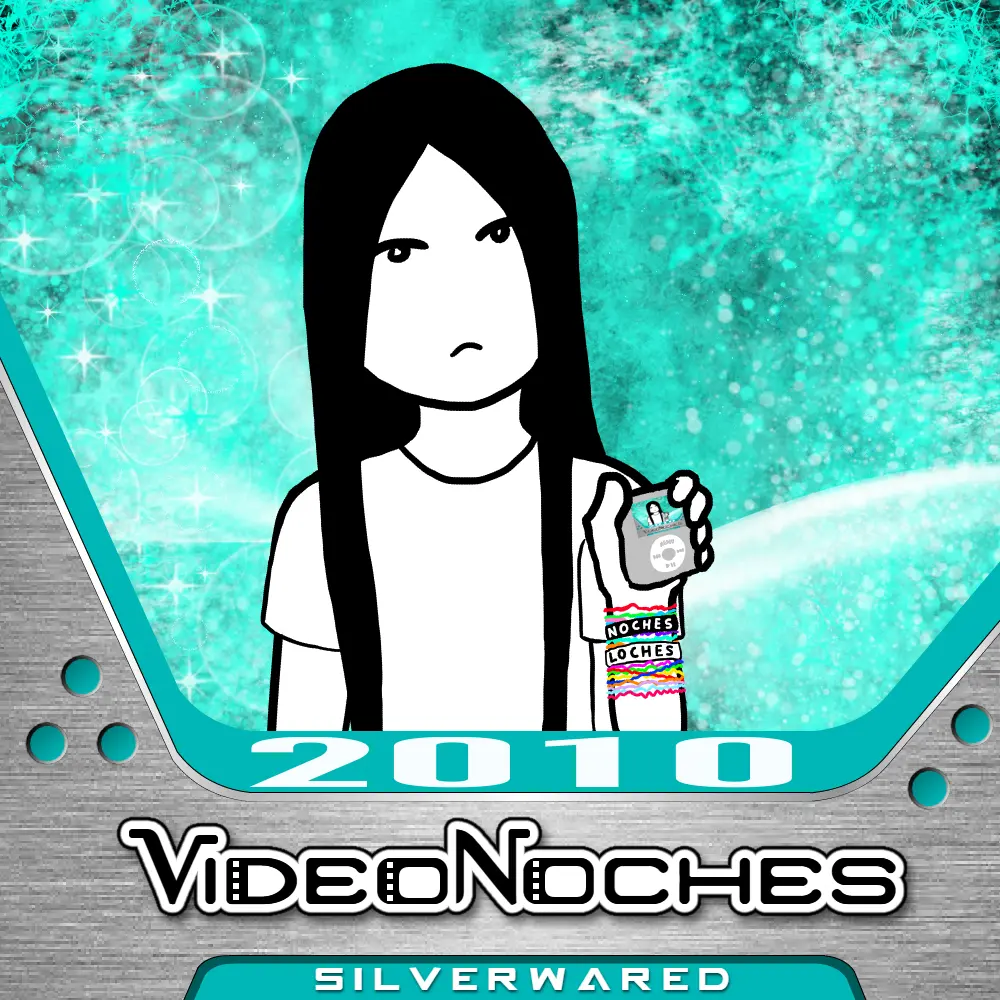

|
View my profiles on: |
|
2010 is an EP that I released on July 26, 2024 (if only I released it one day later).
This is the cover for it. It shows me wearing silly bandz and 2 bracelets that say my name, and I'm holding an iPod Nano 3rd Generation (I have one irl) that also has the cover of 2010 on it.
I drew it in a program called Krita, and by it I mean just the drawing of me and the neon blue background thingy.
The VideoNow Color inspired banner that says "VideoNoches" was made in Macromedia Flash 8 (or Adobe Flash for those who don't know what macromedia was.
However the actual VideoNoches picture/logo thingy was made in an online editor called Pixlr (I used to use it at the time, but I have since moved on).
This is the first time I ever used the name SILVERWARED in anything related to my music, and I just typed it in the GameBoy Advance font.
Also, you might ask...
"Why are you completely white on the covers for 2010 and 2012 if you're black in real life!?!?"
 Anyways, now that we're past all of the BORING stuff (if you didn't think that was boring thank you). It's time to start talking about the actual music. Tracklist: |
|
View my profiles on: |
 Soundcloud
Soundcloud iTunes
iTunes YouTube
YouTube Instagram
Instagram